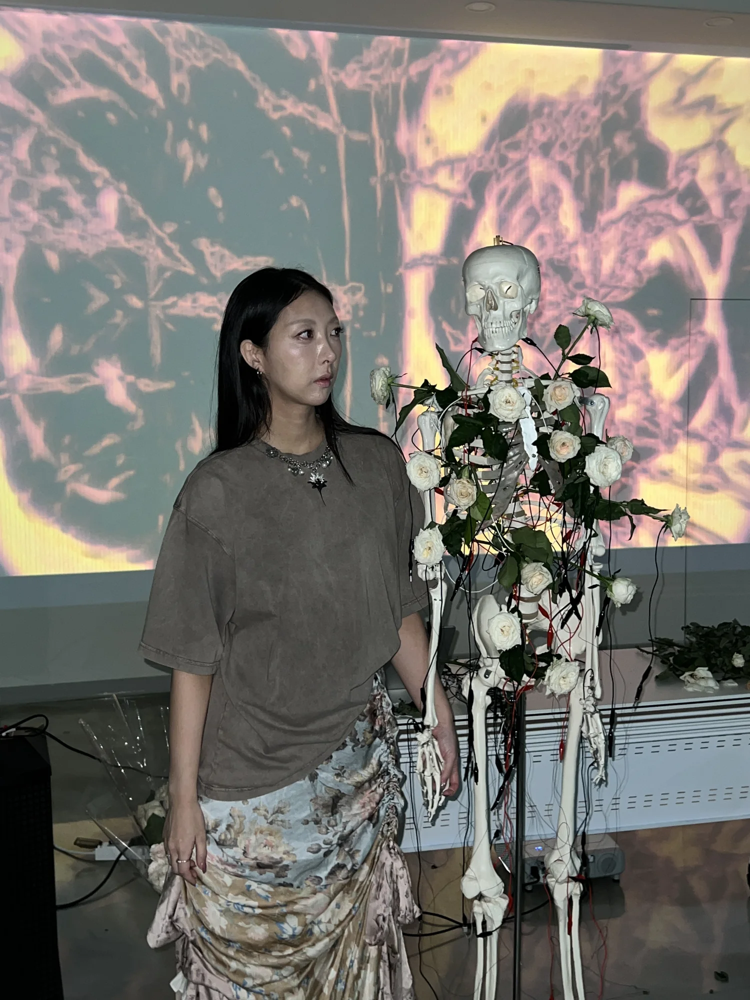

October
Body Morphosis
Duo moving-image exhibition
RMIT University, Melbourne
Artist
A Korean-Australian interactive audio-visual artist working between Seoul and Melbourne.

Short Bio
Minnie Park is a Korean-Australian interactive audio-visual artist working between Seoul and Melbourne. Her installations combine living roses, tactile interaction, sound, light and moving image to examine affect as embodied, relational and culturally situated. Through Meta Rose—begun in 2024 and including The Meta Kibun Project—she develops distinct participatory systems around emotional ambivalence, culturally shaped feeling, relational touch and memory.
Artist Statement
Park works with living roses as tactile interfaces. A participant’s touch changes sound and moving image, while shared contact can complete a circuit between bodies. Participation is part of the work’s composition: its form depends on who engages with it, for how long and alongside whom.
Pink carries emotional intensity within her practice. Paired with grey, black, distortion and contrasting sonic textures, it allows attraction and discomfort to remain present together. The rose brings this ambivalence into material form through petals and thorns, fragility and resistance.
The installations also unfold through the changing condition of their materials. Roses are handled, begin to dry and remain after an exhibition has ended. Park retains and photographs these flowers, extending her inquiry from the live encounter to the traces that remain.
Research →Exhibitions / Performances / Public Programmes
A selected chronology of exhibitions, performances, workshops and public presentations. The full record is available in the 2026 Artist CV.
August
Solo exhibition / Interactive audio-visual installation
Seoul Fringe Festival / Mijin Floor, Yeonnam-dong, Mapo-gu, Seoul / Melbourne Fringe Festival (forthcoming)
April
Group exhibition / Interactive installation
Platform Presents: Hybrid / 118 Greeves Street, Fitzroy, Melbourne
April
Artist-led participatory workshop
Seventh Gallery, Melbourne / Led by Minnie Park
November
Group exhibition
Norla Dome, Docklands, Melbourne
October
Artist-led workshop
Science Gallery Melbourne / TouchCollective
September
Exhibition / Practice-based Honours research
RMIT University, Melbourne
July
Solo exhibition
Mugonggan, Seongnam, Gyeonggi-do, South Korea
March
Commissioned moving image / Screen presentation
PayPal Melbourne Fashion Festival / Melbourne
November
Exhibition / Interactive audio-visual installation
RMIT University, Melbourne
June / October
Live audio-visual performance
Miscellania, Melbourne
June
Interactive audio-visual exhibition / Rose installation and interactive game
Blackbox, RMIT University, Melbourne
May
Exhibition / Rose installation
Seventh Gallery, Melbourne
November
Live audio-visual performance
Miscellania, Melbourne
October
Duo moving-image exhibition
RMIT University, Melbourne